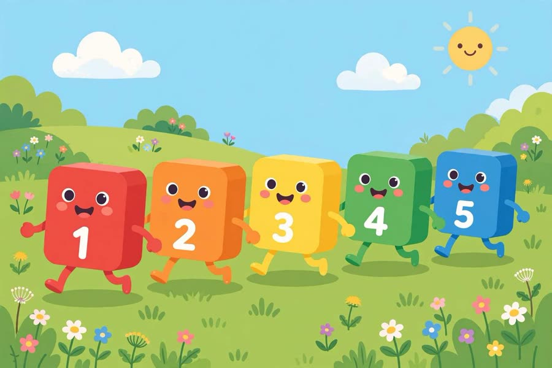
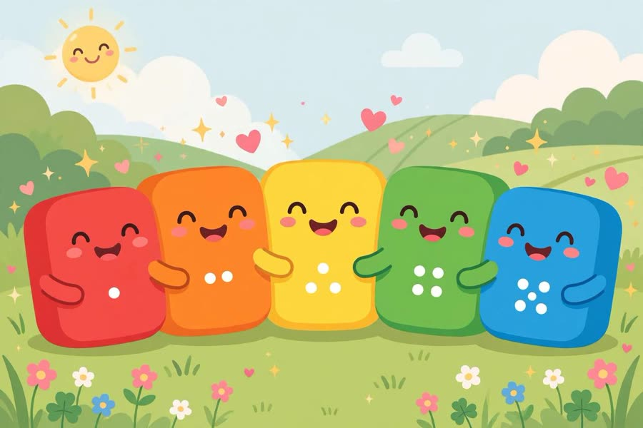

📖 剧情简介
五号带着朋友们去田野森林大冒险：排好队，一、二、三、四、五！
Five leads a rhyming romp through field and forest: line up — one, two, three, four, five!
🎭 角色
一号 One、二号 Two、三号 Three、四号 Four、五号 Five
（田野边，大家整装待发 / At the edge of the field, everyone is ready）
5
Five五号
Off we go! Follow me!
出发啦！跟我来！
1
One一号
Through the field!
穿过田野！

Through the field!
2
Two二号
Through the forest!
穿过森林！
5
Five五号
Line up in order! One, two, three, four, five!
按顺序排队！一、二、三、四、五！
（大家排成一队 / Everyone lines up in order）
3
Three三号
Uh oh! Someone's missing! Who is it?
糟糕！少了一个！是谁？
4
Four四号
One, two, three… five! Four is missing!
一、二、三……五！少了四！
5
Five五号
Come back, Four! Now we're complete!
四快回来！这下齐了！

Come back, Four! Now we're complete!
A
All大家
🎵 Off we go, off we go,
🎵 出发啦，出发啦，
A
All大家
🎵 One, two, three, four, five — off we go!
🎵 一、二、三、四、五——出发啦！
5
Five五号
What an adventure!
多棒的冒险！